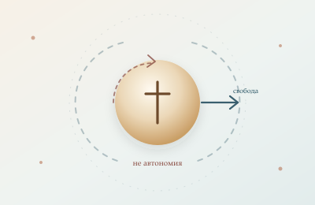
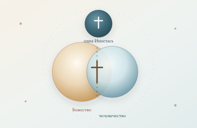
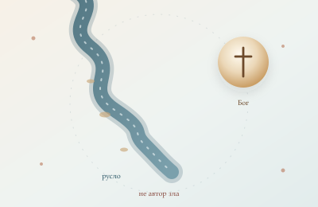
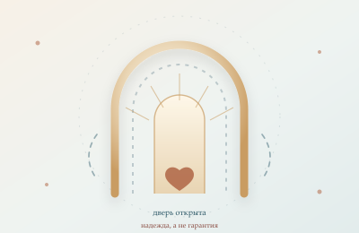
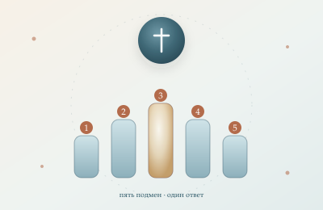

1. Зачем этот цикл
Книга Евгения Жукова «История и философия монергизма. Том 2» — не рядовой богословский трактат. Это исповедание, написанное человеком, который двадцать лет прожил с вопросом «что я делаю не так?» и нашёл выход в отрицании свободы выбора. Автор говорит об этом прямо:
«...который я знаю не из книг: двадцать лет я просыпался и засыпал с одним вопросом — что я делаю не так, — пока милость Божия и додуманная до конца мысль не вывели меня на берег» [строка 57].
Уже поэтому книга заслуживает не презрительного отмахивания, а серьёзного разбора. За ней стоит реальная боль — та самая, которую множество искренних верующих знает по опыту: религиозность, построенная на страхе, на торге с Богом, на ежедневном экзамене, который невозможно сдать. Автор ставит диагноз, во многом точный: «Человек, так наученный, не может предать себя потоку — он обязан грести. Из этого убеждения растут страх, торг с Богом, изнурительная религиозность и тот тихий, стыдливо скрываемый невроз, который знаком множеству искренних верующих» [строки 57].
Но диагноз и лечение — разные вещи. Книга предлагает не просто утешение, а целую систему: свободы выбора не существует; Бог определяет всё, включая зло; человек спасается всецело и неотвратимо; все разумные творения в конце концов будут спасены. Эта система изложена последовательно, с философской эрудицией, с огромным числом цитат из Писания и отцов. Именно последовательность делает её опасной: читатель, уставший от тревоги, получает не просто «добрую весть», а законченное мировоззрение, которое на первый взгляд снимает груз, а на деле подменяет одно рабство другим — рабство безличной необходимости, замаскированной под любовь.
Задача настоящего цикла — прочитать книгу внимательно, изложить её основные тезисы, сопоставить их между собой, проверить по первоисточникам и оценить с позиции неразделённой Церкви: Писания, Вселенских Соборов и святых отцов до схизмы 1054 года.
2. Метод
Мы сознательно не пересказываем книгу «по частям» и не строим разбор вокруг личности автора. Метод следующий.
Первый шаг — точное изложение. Каждый тезис книги формулируется её же словами, с указанием строк в файле Zhukov_E_Istoriia_i_filoso.fb2.txt. Книга не имеет пагинации в текстовом файле, поэтому ссылки даются по строкам; читатель может открыть файл и проверить любую цитату. Мы стараемся не подменять мысль автора пересказом: там, где он говорит резко, мы цитируем резко.
Второй шаг — сопоставление тезисов между собой. Система проверяется на внутреннюю согласованность: не противоречит ли автор сам себе? Если Бог определяет всё, включая зло, но «не является автором зла»; если свободы нет, но человек «виновен»; если все спасутся, но Церковь молится о спасении и предупреждает о погибели; если практика сводится к «правильному мышлению», но книга написана как призыв к чтению и перемене ума, — эти напряжения надо назвать.
Третий шаг — проверка по первоисточникам. Ключевые ссылки автора проверяются по открытым изданиям Писания, соборных определений и отцов. Мы не принимаем на веру ни цитаты автора, ни выводы вторичной литературы. Там, где автор цитирует отца, мы указываем, что именно сказано в источнике и в каком контексте. Там, где цитата приведена без контекста, мы этот контекст восстанавливаем. Там, где автор опирается на современную реконструкцию (например, на монографию И. Рамелли об апокатастасисе), мы говорим об этом прямо.
Четвёртый шаг — оценка с позиции неразделённой Церкви. Критерий — не «мне нравится / не нравится» и не конфессиональная полемика Запада с Востоком, а вера Церкви первого тысячелетия: Символ веры, определения Вселенских Соборов, согласие отцов. Мы не противопоставляем «восточное» «западному» там, где Церковь ещё едина; мы спрашиваем, что́ было общим достоянием до разделения и что́ автор этому общему противопоставляет.
3. Главный тезис книги
Книга утверждает:
«Свободы выбора не существует, и это благая весть» [строка 5, аннотация].
В развёрнутом виде система автора держится на пяти опорах.
- Философская. Либертарианская свобода (способность при тех же условиях выбрать иное) не существует. Аристотелевский регресс показывает, что человек не является творцом собственного характера; наука не находит в мозге «свободного» источника решений; интроспекция не обнаруживает в выборе никакого «я», стоящего над характером. То, что мы называем выбором, есть лишь борьба мотивов внутри уже данного характера [строки 155–239, 428–599].
- Христологическая. Халкидон и Шестой Вселенский Собор учат, что во Христе человеческая воля не имела гномического выбора, а следовала божественной. Если совершенный Человек не выбирал между альтернативами, то способность к альтернативам не принадлежит полноте человеческой природы; следовательно, она не есть образ Божий и не есть свобода [строки 600–659].
- Антропологическая. Человек есть существо, у которого «нет ничего своего»: сознание вдунуто, характер соткан, имя зовомо. Человеческая природа численно одна, и сознание одно; лица различаются не перегородками в сознании, а зовом Отца. Образ Божий — не свобода выбора, а личное самоосознание, стояние «я» перед «Ты» [строки 810–903, 1552–1675].
- Сотериологическая и апологетическая. Бог определяет всё, включая злые деяния, но не является «автором зла»: Он не вливает зло в сердце, а направляет его русло. Зло временно, инструментально и в конце будет уничтожено; поэтому Бог, допустивший зло ради большего блага, не может быть назван его автором. Ответственность человека сохраняется, потому что поступок остаётся «его», хотя альтернативы не было [строки 1096–1547].
- Эсхатологическая. Все разумные творения будут спасены. Вечные муки несовместимы с благостью Бога; огонь очищает, а не казнит; свобода не может бесконечно сопротивляться благодати, а если она и могла бы, то такая «свобода» — миф. Универсализм — не мечта, а вывод из безусловного предопределения и всемогущей любви [строки 1676–2030, 2298–2617].
Эти пять опор связаны: если нет либертарианской свободы, то нет и автономного сопротивления благодати; если Бог определяет всё, то Он же и доведёт всех до спасения; если все спасутся, то зло не имеет последнего слова, и Бог не является его автором. Система красива своей замкнутостью. Вопрос в том, соответствует ли она вере Церкви.
4. Карта цикла
Цикл состоит из четырёх обзоров и итогового текста; каждый обзор можно читать отдельно, но вместе они образуют единое целое.

Свобода, которой нет
Философские основания: либертарианство, Аристотель, наука, интроспекция, Халкидон.

Халкидон против монергизма
Антропология и сотериология: единое сознание, образ Божий, вина, обожение.

Бог — автор зла?
Предопределение, ответственность и теодицея: Рим. 9, «автор маршрута», универсализм.

Все спасутся?
Универсализм, флорилегий и практика: отцы, прелесть, апофатика, Коссад.

Итог цикла
Что верно, пять подмен и ответ Церкви в пяти тезисах.
Подробнее о частях
Обзор 1. «Свобода, которой нет»: философские основания. Разбираются главы о либертарианстве, Аристотеле, науке, трансцендентной свободе, агентной причинности, интроспекции, Халкидоне и Августине. Главный вопрос: против какой свободы выступает автор и не подменяет ли он свободу вообще свободой автономной? Показывается, что его критика либертарианской самоисточности во многом верна, но вывод «свободы нет» не следует; Церковь знает свободу, которая не есть автономия.
Обзор 2. «Халкидон против монергизма»: антропология и сотериология. Разбираются учение о едином сознании, образ Божий, грехопадение, вина-состояние, спасение, истинная свобода и приложение. Главный вопрос: совместима ли антропология автора с халкидонским учением о двух волях и с святоотеческим учением об образе Божием? Показывается, что автор правильно различает природную и гномическую волю, но незаконно переносит уникальный случай Христа на всех людей; его «единое сознание» — философский монизм, а не учение Каппадокийцев; его отрицание обожения — прямое расхождение с отцами.
Обзор 3. «Бог — автор зла?»: предопределение, ответственность и теодицея. Разбираются три модели провидения, учение о предведении, проблема моральной ответственности, аргументы о принуждении и манипуляции, «авторство зла» и универсализм как теодицея. Главный вопрос: может ли Бог определять злой акт и при этом не быть его причиной? Показывается, что различение «русла» и «воды» не спасает: если Бог определяет модус, время, объект и меру злого акта, Он причинно причастен злу; «попущение» у автора функционально совпадает с решением. Церковь исповедует иное: Бог не творит зла, не желает его и не определяет к нему, но попускает его и обращает к добру.
Обзор 4. «Все спасутся?»: универсализм, флорилегий и практика. Разбираются библейские аргументы универсализма, промежуточное состояние, флорилегий отцов, учение о вечности мук, практика молитвы, «прелесть», апофатика, «совлечение», приятие всего как воли Божией и приложение. Главный вопрос: является ли универсализм верой Церкви или частной надеждой, и совместим ли он с библейскими предупреждениями? Показывается, что флорилегий автора — не независимая подборка, а перевод с английского по монографии Рамелли, без контекста и с внутренними противоречиями; что сам автор приводит цитаты, опровергающие его тезис; что его практика — квиетистская по структуре и противоречит аскетическому учению Церкви.
Итог цикла. Завершает цикл отдельный текст, в котором собраны главные выводы: что в книге верно, какие пять подмен она совершает и как звучит ответ Церкви в пяти тезисах. Его можно читать как краткое резюме всего разбора.
5. О терминах
Терминология книги требует уточнения, иначе спор будет бесплодным.
Либертарианская свобода — способность при тех же самых условиях, при том же самом характере и тех же мотивах выбрать иное, чем выбрал. Это свобода «мог поступить иначе» в сильном, метафизическом смысле. Автор отрицает именно её, и в этом он прав: такая свобода не является ни святоотеческим учением, ни условием ответственности в том виде, как его понимает Церковь.
Компатибилизм — учение, по которому свобода совместима с детерминизмом: действие свободно, если оно проистекает из характера и желаний агента, даже если эти характер и желания сами причинно обусловлены. Автор принимает компатибилизм в отношении обыденных выборов: «Акты аскезы суть обычные акты внутри характера — liberum arbitrium, которого настоящий труд никогда не отрицал» [строка 849]. Это важное признание: автор не отрицает выбор вообще, он отрицает лишь метафизическую возможность иного. Но тогда его тезис «свободы выбора не существует» — риторическое преувеличение: он отрицает не выбор, а один из способов его объяснения.
Автексусион (αὐτεξούσιον) — святоотеческий термин: самовластие, способность человека быть источником своих действий, не быть принуждаемым извне. Отцы отличают его от автономии: человек не имеет бытия от себя, но имеет действие от себя, потому что Бог дал ему эту способность. Автор отождествляет автексусион с либертарианской самоисточностью и на этом основании отвергает его. Это отождествление — главная подмена всей книги. Преподобный Иоанн Дамаскин пишет: «Бог создал человека по природе безгрешным и наделил его свободной волей... он имеет силу преуспевать в добре, сотрудничая с божественной благодатью, и равным образом обращаться от добра к злу, ибо Бог даровал ему свободу воли. Ибо нет добродетели в том, что происходит по принуждению»1. Здесь и свобода, и благодать, и сотрудничество — то, что автор называет «синергизмом» и отвергает.
Синергия — не «50 на 50», не торг и не заслуга. Это учение о том, что благодать Божия предваряет, пробуждает, укрепляет и совершает спасение, а воля человека, исцелённая благодатью, свободно соглашается и соработает. Преподобный Иоанн Златоуст, толкуя слова апостола «ни хотящего, ни текущего», говорит: «Он не лишает нас свободной воли, но показывает, что всё не наше собственное, а требует благодати свыше. Ибо нам надлежит и хотеть, и тещи, но не полагаться на свои труды, а на любовь Божию»2. Это не монергизм и не пелагианство; это то, что Церковь исповедует.
Монергизм — термин, который автор использует в собственном смысле: одно действующее начало в спасении, Бог. В истории догматики слово «моноэнергизм» (одно действие во Христе) было осуждено Шестым Вселенским Собором как христологическая ересь. Автор знает об этом и пытается развести «монергизм» и «моноэнергизм», но терминологическая близость не случайна: его система действительно стремится к тому, чтобы в человеке действовал только Бог, а человек был лишь «местом» действия. Церковь исповедует во Христе два природных действия и две природные воли; в человеке — действие благодати и свободное действие личности, неслиянно и нераздельно.
6. Об источниках и цитатах
Книга содержит огромный аппарат. Это её сильная сторона и одновременно источник проблем.
Во-первых, автор часто цитирует отцов не по первоисточнику, а по английским переводам и современным монографиям. В разделе «Цитаты о всеобщем спасении» более ста сносок содержат формулу «Перевод с англ. Е. А. Жукова по изд.: Ramelli I. L. E. The Christian Doctrine of Apokatastasis... Brill, 2013». Мы насчитали 158 упоминаний имени Рамелли в книге. Это значит, что подборка отцов — не самостоятельное исследование автора, а русский пересказ современной монографии, специально посвящённой доказательству апокатастасиса. Это не делает цитаты ложными автоматически, но требует особой проверки: монография Рамелли — не нейтральный источник, а реконструкция с определённой богословской позицией.
Во-вторых, цитаты часто приведены без контекста. В флорилегии нет ни одного окружающего абзаца, ни указания на жанр (гомелия, гимн, догматический трактат, катенный фрагмент), ни объяснения, против кого направлена полемика. Между тем контекст решает всё. Например, святитель Григорий Богослов в «Слове 40. 36» (в цитате, которую приводит автор) прямо говорит о «неугасимом огне для грешников, пребывающем в грядущем веке» и допускает очистительное понимание лишь как чужое мнение: «разве что кто-то захочет считать» [строка 2489]. Автор приводит эту цитату — и не замечает, что она опровергает его тезис. Преподобный Максим Исповедник в цитате, приведённой автором, говорит о восстановлении природы «через познание благ — даже если ещё не через участие в них» [строка 2555]. Эта оговорка отделяет восстановление природы от личного спасения; автор её приводит и не замечает, что она разрушает его вывод. Иоанн Скот Эриугена, которого автор цитирует как свидетеля всеобщего спасения, в цитируемом им сочинении говорит: «ни злые, ни нечестивые не воскреснут» [строка 2606]. Это не мелкие недочёты; это внутренние трещины, проходящие через весь флорилегий.
В-третьих, мы проверяли ключевые цитаты по открытым изданиям. Там, где автор точен, мы это подтверждаем. Там, где он расширяет или сужает смысл, мы показываем расхождение. Ссылки на источники даны в каждом обзоре; в конце цикла будет сводный список.
7. Предварительный вывод
Книга Жукова — серьёзный вызов. Она написана не для того, чтобы пошуметь в академических журналах, а для того, чтобы освободить читателя от невроза, порождённого ложной доктриной. В этом её сила: автор понимает, о чём говорит, и говорит с болью.
Но решение, которое он предлагает, не является решением Церкви. Церковь не учит, что человек спасает себя своими силами; она не учит и тому, что человек не участвует в своём спасении. Она учит тому, что благодать предваряет, а свобода отвечает; что Бог хочет спасти всех, но не принуждает никого; что любовь не может быть без ответа, а ответ не может быть без свободы. Автор прав, когда отвергает автономную самоисточность, торг с Богом и религиозность, построенную на заслугах. Он неправ, когда из этого делает вывод, что свободы нет, что Бог определяет зло и что все спасутся автоматически. Это не освобождение от рабства, а обмен одного рабства на другое: от рабства страха — к рабству необходимости, от тревоги «я должен» — к покою «ничего не зависит от меня».
Цель цикла — не «разоблачить» автора, а показать читателю, что есть третий путь, которого книга не видит: путь благодати и свободы, путь синергии, путь любви, которая не принуждает и не отменяет любимого. Этот путь исповедует неразделённая Церковь.
Цель цикла — не «разоблачить» автора, а показать третий путь: путь благодати и свободы, путь синергии, путь любви, которая не принуждает и не отменяет любимого.
Примечания
- Иоанн Дамаскин. Точное изложение православной веры. Кн. II, гл. 12. Английский текст: Wikisource. В оригинале: «God made him by nature sinless, and endowed him with free will... he has the power to continue and go forward in the path of goodness, by co-operating with the divine grace, and likewise to turn from good and take to wickedness... For there is no virtue in what is the result of mere force». ↩
- Иоанн Златоуст. Беседы на Послание к Римлянам. Беседа XVI. Английский текст: Wikisource. ↩